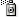

Create symbol sets
The Symbol Sprayer acts like a particle sprayer—letting you add a large number of identical objects to the artboard at one time. For example, use the symbol sprayer to add hundreds of grass blades, wildflowers, bees, or snowflakes.
 Spray sets of symbol instances onto artwork
Spray sets of symbol instances onto artwork
-
Select
a symbol in the Symbols panel, and then select the Symbol Sprayer tool

. - Click or drag where you want the symbol instances to appear.
Add or delete symbol instances from an existing set
- Select the existing symbol set.
- Select the Symbol Sprayer tool and a symbol in the Symbols panel.
- Do one of the following:
-
To add symbol instances, click or drag where you want the new instances to appear.
-
To delete symbol instances, hold down Alt (Windows) or Option (Mac OS) as you click or drag where you want to remove instances.
-